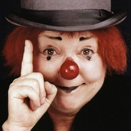

Frattellini
Apprennant sur le site de cours en ligne OpenClassrooms

Annie Fratellini, 1932 - 1997
Mon expérience
- De 1993 à 2001: Artiste de cirque acrobate pour différent cirque en France et en Suisse
- De 2001 à 2018: Divers petits boulots sans interêt pour payer les factures :-)
- De 2018 à aujourd'hui: En reconversion professionnelle ayant pour projet le developement de type objet (C#, Python et Java)
Mes compétenses
- Acrobatie au sol
- Connaissance basique en HTML
- Connaissance basique en C#
- Connaissance basique en Python
- Connaissance basique en compréhension d'algorithme
- Je marche aussi sur les mains :-)
Ma formation
Pour la partie Artiste :
- Ecole nationale du cirque Annie Fratellini
- Ecole de mimodrame Marcel Marceau
- Divers stages : Comedia del Arte, Clowns, Jonglerie, Trapèze volant...
Pour la partie Numérique :
- HTML3 et 4 dans des livres achetés à la FNAC entre 1998 et 1999
- Pour l'HTML5 et le reste des bases acquises, comme pour l'auteur de ce cours, j'ai (pour le moment) tout appris sur OpenClassrooms